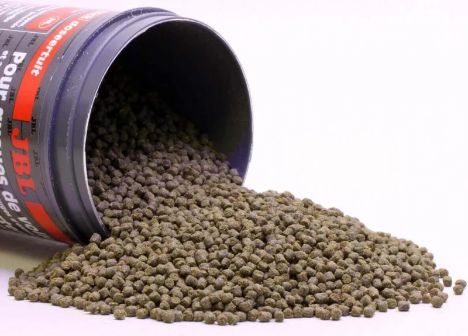

Alimentos para peces
Las comidas para peces son los alimentos específicamente diseñados para nutrir a los peces en acuariosy estanques.
Estos alimentos proporcionan los nutrientes necesarios para el crecimiento, la salud y el color de los peces.
La elección de la comida adecuada es fundamental para mantener a tus peces sanos y felices.
Aquí tienes algunos tipos comunes de alimentos para peces de acuario
- Escamas para peces:
- Adecuada para una amplia variedad de peces, tanto pequeños como grandes,
incluyendo Tetras, Cíclidos y Rasboras.
- Beneficios:Fáciles de dosificar, no ensucian e agua y vienen en una variedad
de fórmulas, como las de crecimiento y coloración.
- Gránulos para peces:
- Apropiados para peces medianos y grandes, como cíclidos.
- Los peces pequeños aceptan grándulos de pequeño tamaño, pero no todos
y no de todas las marcas.
- Beneficiós:Fácil control de la cantidad, no ensucian el agua y
pueden hundirse o flotar según sea necesario.
- Pellets para peces:
- Ideales para peces de mayor tamaño, como Escalares, Discos, Goldfish o Carpas, así como grandes cíclidos.
- Ofrecen una dieta completa y vienen en diferentes tamaños para adaptarse a peces de distintos tamaños.
- Alimentos liofilizados:
- Adecuado para una variedad de peces, especialmente aquellos que
prefieren insectos y larvas.
- Proporcionan una dieta equilibrada y cárnica fácil de dosificar, Ideal
si no se puede disponer de alimento vivo.
Recuerda adaptar la elección de alimento según las especies de peces que tengas en tu acuario.
Escamas para peces

Granulos para peces
Pellets para peces
Alimentos liofilizados
IR A PANTALLA PRINCIPAL